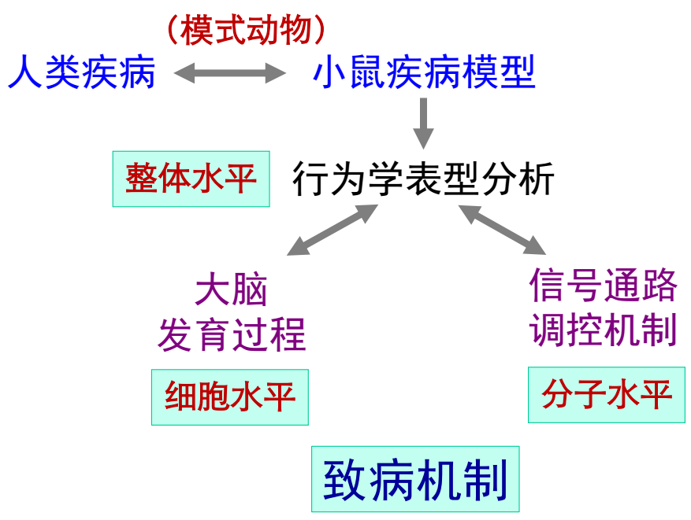
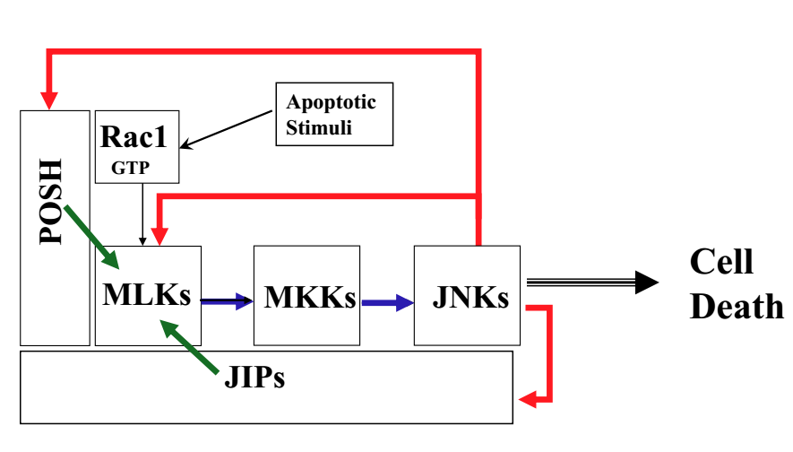

JNK信号通路的生理/病理功能与机制研究
蛋白质修饰调控整个生命活动过程
- 磷酸化修饰和信号转导
- N-糖基化修饰
- 蛋白甲基化、乙酰化、泛素化修饰
- O-糖基化修饰
- 泛素化修饰和蛋白质降解
举例：p53的各种修饰。
protein约30000种，在noncoding-RNA帮助下，各种修饰至少增加十倍。
发展趋势
蛋白组学方法分析 定性/定量（甲基化/磷酸化等）
蛋白质/组织芯片
生物信息学
信号转导与致病机制
疾病→蛋白/非编码RNA→功能
细胞→模式生物→人类疾病
研究思路

丝裂原活化蛋白激酶，MAPK
MAPK信号通路
胞外信号→G蛋白→MAPKKK→MAPKK→MAPK→酶作用物，经过几层级联放大。
JNK信号通路
- MAPK家族中的一员
- 传递应激信号的关键激酶
- 与细胞凋亡、生长、分化及迁移密切相关。
JNK信号通路紊乱
- 表达低或时间短导致肿瘤、神经退行性疾病、心血管病、糖尿病等疾病的发生
- 表达高或时间长加重脑卒中、心梗塞、感染和外伤等造成的机体损伤
细胞凋亡（细胞程序性死亡）
细胞凋亡是机体内在和保守的生理功能
——清除感染、损伤、异常和不再需要的细胞
在发育过程中50%的神经元发生细胞凋亡。
细胞凋亡与疾病
- 过多细胞凋亡
- 帕金森氏病
- 老年性痴呆
- 亨廷顿氏病
- 肌萎缩性侧索硬化
- 脑卒中/外伤
- 艾滋病
- 心梗塞
- 过少细胞凋亡
- 各种肿瘤/癌症
- 自身免疫性疾病
- 病原体感染
- 急性肝损伤
- 贫血
- 糖尿病等
部分细胞没有靶向到靶细胞，不能获得生长因子，因而凋亡。
神经细胞凋亡关键激酶/靶标的发现
POSH(Plenty of SH3 Domains)
POSH不是支架蛋白，和MKKs及JNKs不直接相结合。
POSH/JIP凋亡复合体

JNK信号调控细胞死亡和细胞增殖，对癌症、帕金森氏病和脑发育等有影响，影响要素包括信号强度、时间和定位。
癌症：Multi-tumor Expressed Antigen (MTEA)
与POSH相互作用，在一些肿瘤中高表达，与肝癌等恶性肿瘤相关。
AKT
保护细胞信号通路
干细胞因子（SCF）受体调控机制
率先发现c-KIT与SCF结合后，通过负反馈机制调控c-KIT和CBL的蛋白稳定性，阐明白血病发病机制。